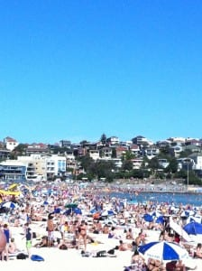
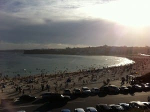

December 2011 was such an abysmal month of “summer” weather, so the blue skies and hot weather attracted a fair few people to the sand yesterday.
I also decided to head down with the family to meet some friends and celebrate the first day of 2012 on Bondi Beach.

Bondi Beach looking towards the north end, 1st January 2012
As expected, the beach was packed. What I noticed most was how many different accents and tourists were around us. It seemed like almost everyone I heard talking, spoke in a foreign accent. I guess this is not really surprising since this time of year is, after all, the peak tourist season.
Towards the late afternoon early evening, a guy holding a megaphone (a surf lifesaver I think), was being followed near the shore by a camera crew. Then we hear on the megaphone in a very strong Australian accent , something along the lines of….”there are about 9 rips in the water today and soon, at 7 o’clock, there will no longer be any lifesavers patrolling the beach”.
I’m not sure if this announcement was an intentional bit of heightened drama for the camera crew that were accompanying the lifesaver on the megaphone or whether the announcement was to caution the many tourists and visitors to the beach who may be unfamiliar with rips and with the fact that the beach isn’t patrolled by lifesavers 24-7. The funny thing is, that if the announcement was a serious cautionary message, it is quite possible that many of the people it needed to reach most may not have been able to understand it, since the megaphone was not all that clear and the lifesaver delivering the message had such a strong Australian accent, it must have been difficult for non-Australians to make out every word that he said.
Well here’s hoping that somehow, the message got through and the first day of the year ended happily for all those on Bondi Beach yesterday.
Happy New Year !!
]]>Today, it was another hot, sunny beautiful day in Sydney and many people thought that hanging out on Bondi Beach would be a great way to spend the first day of 2011. Me and offspring included. We frollicked in the sea and caught a few rays at North Bondi. Didn’t venture into Bondi central – it was pleasant enough just being at the north end. When the sun was getting a bit much, we headed home for some down-time and food.
When we rambled back to North Bondi early in the evening, we couldn’t believe how packed the beach still was, even with the sun starting to sink further down in the sky.

New Year's Day, looking towards South Bondi from north end, 6.40pm, 1/1/11
“Twenty eleven” seeems to have a greater air of certainty about it. For some reason it just has a better ring to it than “twenty ten.” It’s kind of like…”we’re not mucking around here.”
Hope it’s a good ONE.
Happy New Year!!
]]>